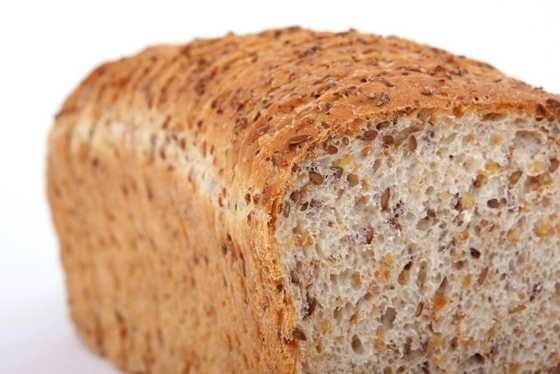
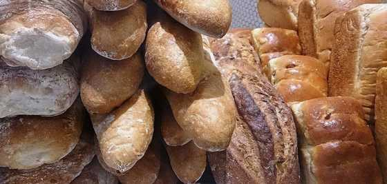
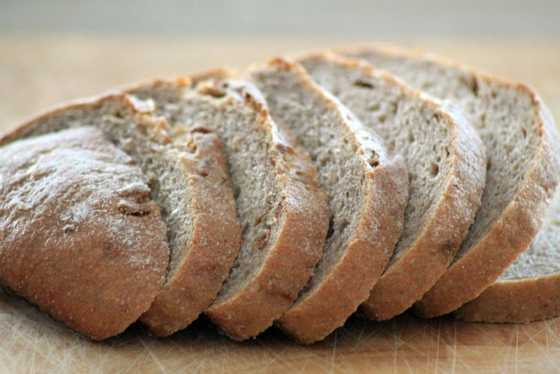
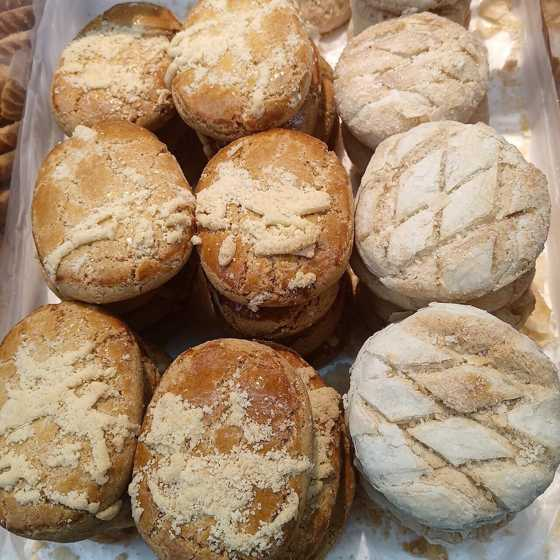
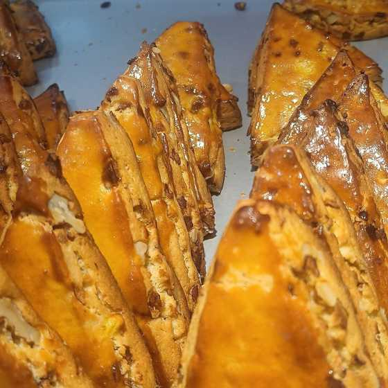
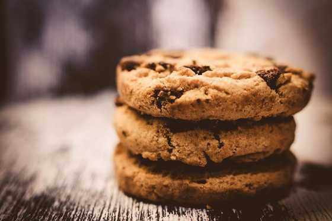
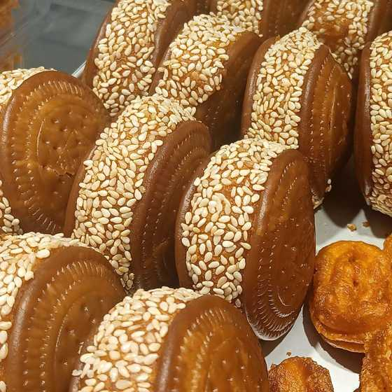

愛媛県西条市小松町 / ぱんとおやつの店
ちいさな寄り道に、
季節のぱんとおやつを。
ミチクサベーカリーは、西条市小松町にある「小さな小さなぱんとおやつの店」です。日々の暮らしを少しだけ豊かにする一つを、季節とともに。

お店の由来・想い
ミチクサベーカリーは、2020年10月8日に西条市小松町でオープンした、パンとおやつのお店です。Instagramでは「西条市小松町にある小さな小さなぱんとおやつの店」と紹介されています。
紹介記事には「季節を楽しんでいただける商品作りを目指しています」とあり、小さな店だからこそ、日々の暮らしを少しだけ豊かにする手助けをしたい、という考えも紹介されています。
情報源: Instagram / 出店紹介記事(2022年) / 店舗紹介ブログ
店名の意味は確認できていません。「ミチクサ(道草)」という響きから、ふらりと立ち寄る楽しさを思い浮かべたのは制作側のイメージで、お店の考えを示すものではありません。見出しなどの言い回しも制作側の表現です。

メニュー・提供内容
紹介記事などで挙げられていた商品の例です。日によって内容が変わる場合があり、現在の品ぞろえ・価格は準備中です。
営業日・営業時間: 準備中 (情報源により異なるため、最新はInstagramをご確認ください)











口コミ
以下は制作側が作成した「イメージ例」で、実在のお客様の声ではありません。
午後のおやつどきに立ち寄りたくなる、やさしい雰囲気のお店だなと思いました。
小さなお店で、季節ごとのパンやおやつを選ぶ時間がうれしくなりそうです。
営業日が限られているので、Instagramを見てから出かけたいと思います。
アクセス
| 所在地 | 〒799-1101 愛媛県西条市小松町新屋敷2350-2 |
|---|---|
| 電話 | 準備中 |
| 営業時間 | 準備中 |
| 定休日 | 準備中 |
| @michikusabakery |
営業日などの最新情報はInstagramでご確認ください。